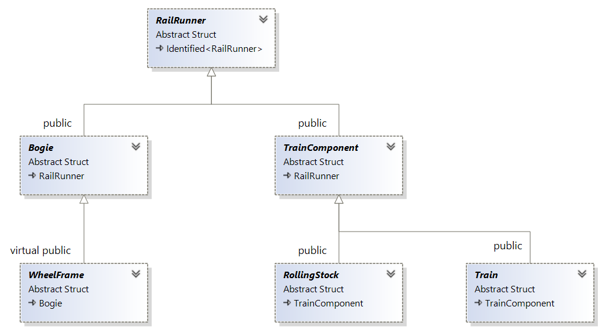

"And tell me, did Venus blow your mind?"
- Train
A Train consists of one or more RailRunners that are coupled together as a chain. The Train itself is a RailRunner:
Railroad companies treat a single locomotive or waggon on a yourney as to be a train. Also trains might be considered as being constituted from two or more subtrains. While this is mostly semantics and coupled rolling stocks or bogies will behave properly, without knowing to be a train, it turned out to be useful to have a train object in order to handle such a configuration as a whole: e.g., steering all the locomotive in it at once, or deploy all the brakes. Railing a whole train is another application.
One problem with trains is the question, what should happen when two trains couple and from where to get a new train if one splits. Eventually we discarded all ideas about one Train succing up the content of the other, or recycling Train objects as much as possible. Instead we did it in the most clear and simple way, that allows for any policy to be implemented by the user himself:
Note that there is no way to have a valid Train object with fewer than one member. Also note that, since emitting a Train object means returning a shared pointer, if the return value is ignored, the Train object will be deleted immediately. This way one can use RollingStock without bothering about Trains; Bogies would never emit a Train object.